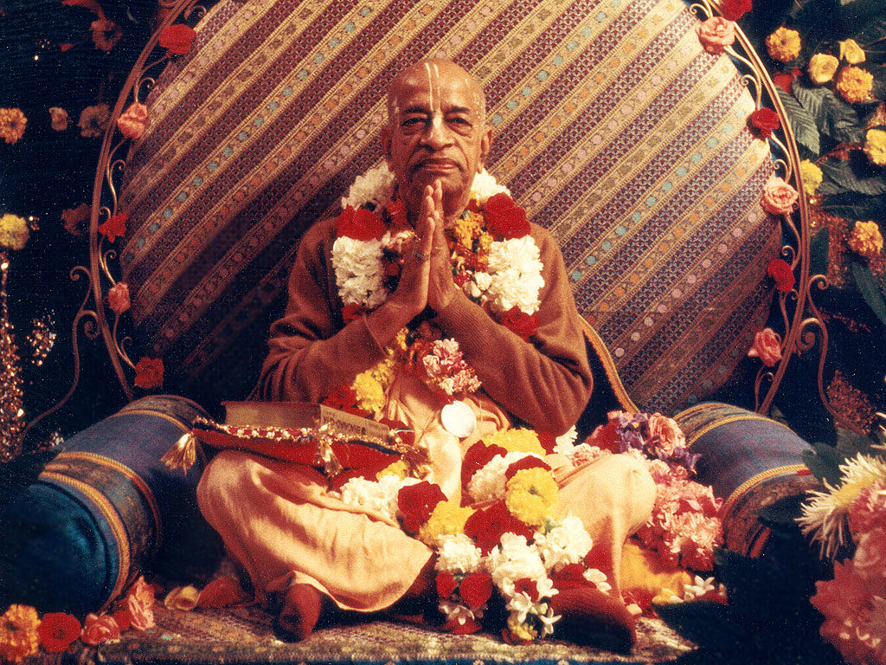

Srila Prabhupada was born Abhay Charan De on September 1, 1896 to a pious Hindu family in Calcutta. As a youth growing up in British-controlled India, Abhay became involved with Mahatma Gandhi’s civil disobedience movement to secure independence for his nation. It was, however, a 1922 meeting with a prominent scholar and religious leader, Srila Bhaktisiddhanta Sarasvati, which proved most influential on Abhay’s future calling. Srila Bhaktisiddhanta was a leader in the Gaudiya Vaishnava denomination, a monotheistic tradition within the broad Hindu culture, and asked Abhay to bring the teachings of Lord Krishna to the English- speaking world. Abhay became a disciple of Srila Bhaktisiddhanta in 1933, and resolved to carry out his mentor’s request. Abhay, later known by the honorific A.C. Bhaktivedanta Swami Prabhupada, spent the next 32 years preparing for his journey west. In 1965, at the age of sixty-nine, Srila Prabhupada traveled to New York City aboard a cargo ship. The journey was treacherous, and the elderly spiritual teacher suffered two heart attacks aboard ship. Arriving in the United States with just seven dollars in Indian rupees and his translations of sacred Sanskrit texts, Srila Prabhupada began to share the timeless wisdom of Krishna consciousness. His message of peace and goodwill resonated with many young people, some of whom came forward to become serious students of the Krishna tradition. With the help of these students, Srila Prabhupada rented a small storefront on New York’s Lower East Side to use as a temple. On July 11, 1966, he officially registered his organization in the state of New York, formally founding the International Society for Krishna Consciousness.
In the eleven years that followed, Srila Prabhupada circled the globe 14 times on lecture tours, bringing the teachings of Lord Krishna to thousands of people on six continents. Men and women from all backgrounds and walks of life came forward to accept his message, and with their help, Srila Prabhupada established ISKCON centers and projects throughout the world. Under his inspiration, Krishna devotees established temples, rural communities, educational institutions, and started what would become the world’s largest vegetarian food relief program. With the desire to nourish the roots of Krishna consciousness in its home, Srila Prabhupada returned to India several times, where he sparked a revival in the Vaishnava tradition. In India, he opened dozens of temples, including large centers in the holy towns of Vrindavan and Mayapur.